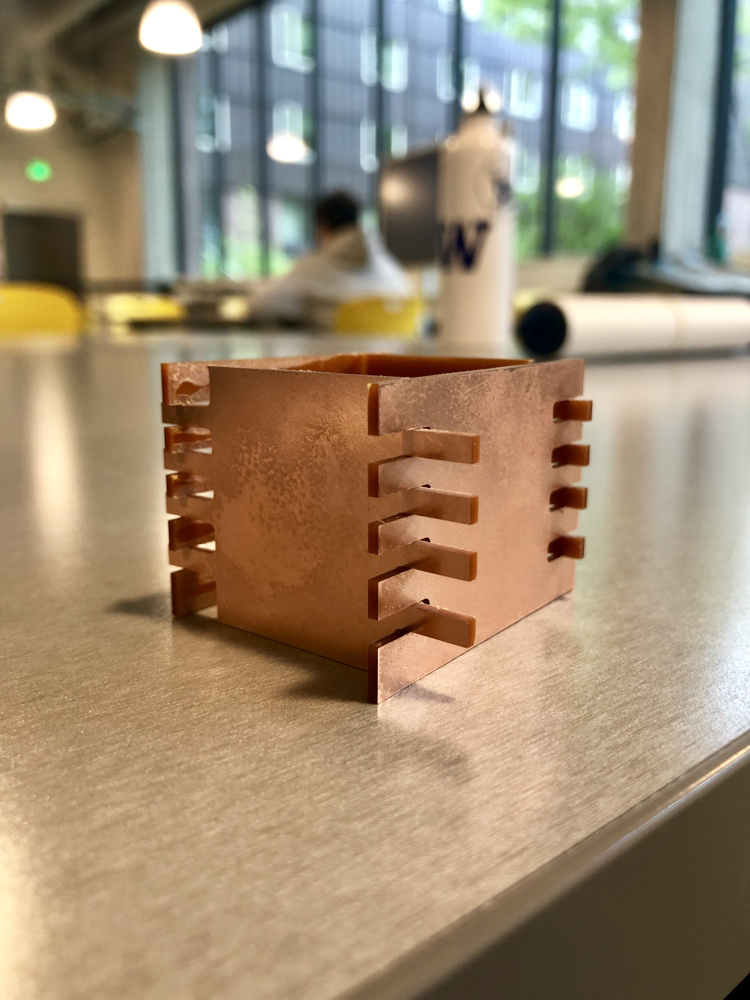

Julie's Assignment 6!
Here is all the documentation for assignment 6!

My strategy for the design was to create a simple box with cutouts. I did some light sketching and then transitioned to OnShape. For some reason, I struggled in OnShapee this week, it was almost like I forgot everything I've learned so far. In OnShape, I ended up cutting out each insert, versus using a 'rectangular array'. I know this is a vary manual method, but it worked for me!


Onshape and Printing
I choose to design the box sides with an overlapping fit, I cut out each rectangular shapee, once I verified that the parts fit together, I exported OnShape to a DXF, uploaded to Kicad, exported from Kicad and imported into Bantam. Once in Bantam, I realized a couplee things: the siz of my artifact was extremely small, so I had to go back into KiCad and resize the artifact. Once I was back in Bantam, I realized that I hand't created DOG BONES. So I reverted and went back to OnShape and used Fillet to soften the edges.
Once uploading to Bantam, I verified my settings and started printing...and OOPS! I realized that I hadn't put in the size of the FR1, so the End Mill was going off of the surface area. After stopping and entering this setting, I started Milling again, and all turned out well.
Printer settings:


See Onshape link for laser elements here
Credits: Thanks to Kim, Kellie, Cindy and Ping for support on Monday evening.
Reflection: For next time, I would have my measurements in OnShape in MM, as exporting/importing was not accurate. I would also read up on some OnShape tutorials, to do less manual work. And finally I would've made my physical artifact smaller, so I could print multiple artifacts on each piece of FR1.